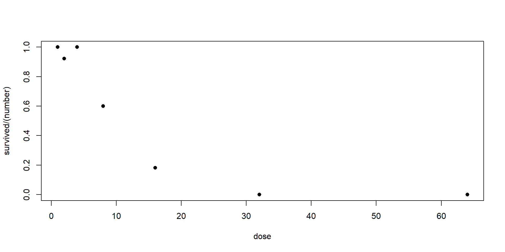
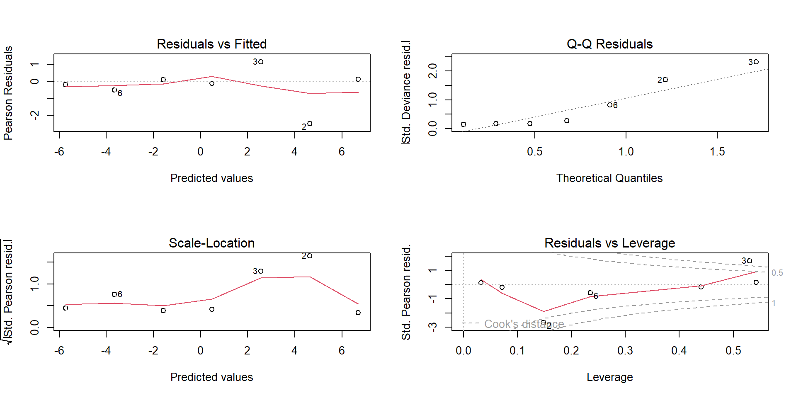
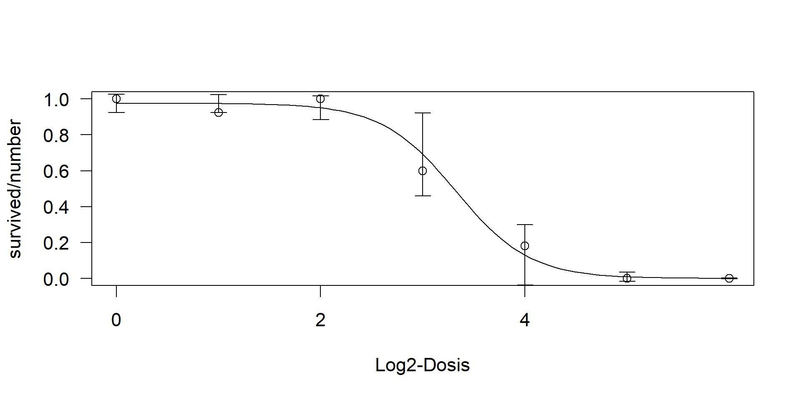
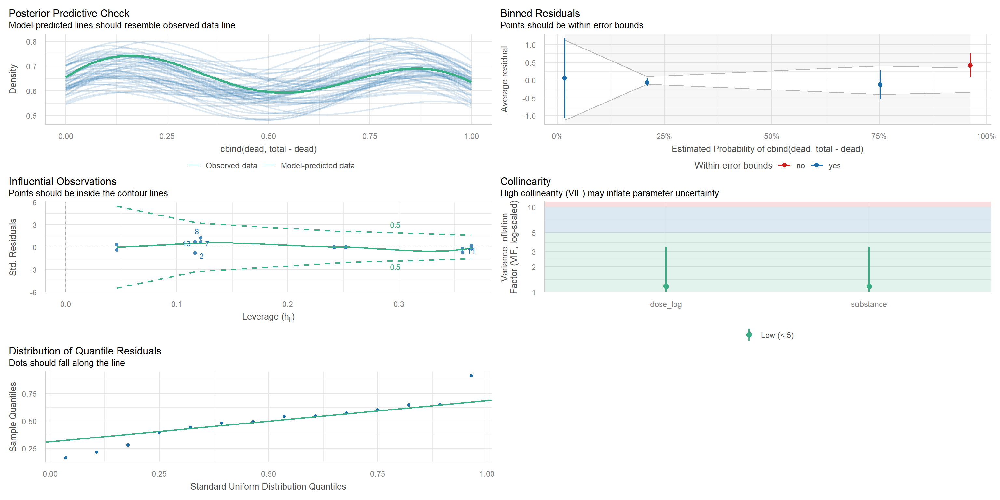

df_vektor <- data.frame(
pH = c(5.0, 5.2, 5.5, 5.8, 6.0, 6.2, 6.5, 6.7, 7.0, 7.2),
# 1 = Gekeimt (Erfolg), 0 = Nicht Gekeimt (Misserfolg)
keimung = c(0, 0, 1, 1, 1, 1, 1, 0, 0, 0)
)
# Modellaufruf:
# glm(keimung ~ pH + I(pH^2), data = df_vektor, family = binomial)09-Generalized Linear Models
Angewandte Statistik – Ein Praxiskurs
Thomas Petzoldt
2025-12-13
Ausgewählte Beispiele
Was ist ein Generalisiertes Lineares Modell (GLM)?
Erweitert die Theorie der linearen Modelle auf bestimmte nichtnormalverteilte Responsevariablen durch die Verwendung einer Link-Funktion.
- Poisson-Verteilung:
- Zähldaten, z.B. Vorkommen von Tieren.
- Häufigkeit von Ereignissen: \(0, 1, 2, 3, \dots\) Zahlen sind strikt positiv, Null kann vorkommen.
- Binomial-Verteilung:
- Binäre Variablen (lebend/tot, vorhanden/nicht vorhanden) oder Dosis-Wirkungsbeziehungen.
- Nominelle Variablen (Faktorstufen) mit zwei oder mehr Ausprägungen.
- Gamma-Verteilung:
- Metrische Variablen, oft rechtsschief (z. B. Reaktionszeiten, Wartezeiten).
- Vermeidet Transformationen (z.B. log-Transformation) der Responsevariable.
Verteilungsfamilie und Linkfunktion
Ein GLM trennt das Modells in drei Komponenten:
- 1. Zufallskomponente (Verteilungsfamilie):
- Definiert die Wahrscheinlichkeitsverteilung der Responsevariable \(Y\).
- Legt fest, welche Verteilung die Daten (z. B. Poisson, Binomial, Gamma) annehmen.
- 2. Systematische Komponente (Linearer Prädiktor):
- Die bekannte lineare Gleichung: \(\eta = \beta_0 + \beta_1 X_1 + \dots\)
- Enthält alle Kovariablen und deren Koeffizienten.
- 3. Linkfunktion:
- Verbindet die Zufallskomponente (den Erwartungswert \(E(Y)\) des Response) mit der Systematischen Komponente (dem linearen Prädiktor \(\eta\)).
- Transformation des Erwartungswertes: \(g(E(Y)) = \eta\)
Beispiel: Bei binären Daten transformiert die Logit-Linkfunktion die Wahrscheinlichkeiten (die zwischen 0 und 1 liegen müssen) auf die gesamte reelle y-Achse (\(-\infty\) bis \(+\infty\)), damit sie mit dem linearen Modell übereinstimmen.
Typische Familien und Kanonische Linkfunktionen
Die Wahl der Linkfunktion hängt von der Verteilung der Response ab.
Kanonische Linkfunktion: ist die Standard- und rechnerisch effizienteste Wahl.
| Verteilungsfamilie | Response-Typ | Kanonische Linkfunktion | Funktion |
|---|---|---|---|
| Normal (Gauß) | Metrisch, kontinuierlich | Identitäts-Link | \(g(\mu) = \mu\) |
| Poisson | Zähldaten (Counts) | Log-Link | \(g(\mu) = \log(\mu)\) |
| Binomial | Binär (0/1), Proportionen | Logit-Link | \(g(\mu) = \log(\frac{\mu}{1-\mu})\) |
| Gamma | Metrisch, positiv, schief | Reziprok-Link | \(g(\mu) = 1/\mu\) |
| Inverse Gauß | Metrisch, positiv, schief | Reziprok-Quadrat-Link | \(g(\mu) = 1/\mu^2\) |
Flexible Anpassungen möglich
- Quasi-Poisson / Quasi-Binomial:
- Wird verwendet, wenn eine Über- oder Unterdispersion vorliegt. – Varianz ist größer oder kleiner als von Poisson oder Binomial angenommen.
- Nicht-kanonische Linkfunktionen:
- Für bestimmte Interpretation oder Datentypen.
- Bei der Binomialverteilung kann statt des Logit-Links der Probit-Link (basiert auf der Normalverteilung) verwendet werden.
Modellformel
Sieht im Prinzip genauso aus, wie bei lm:
Beispiel: Binomialverteilung
- Modellierung von Wahrscheinlichkeiten eines Ereignisses.
- Definitiv viel besser als Arbeiten mit Prozentzahlen!
Responsevariable
Die Responsevariable enthält entweder einen langen Vektor mit (0, 1) für die Ereignisse oder eine Matrix mit zwei Spalten mit den Häufigkeiten für “ja” oder “nein”.
Erklärungsvariablen
- Standard: Die Wahrscheinlichkeit steigt monoton mit dem Prädiktor (z. B. Dosis).
- Optimum: Die Wahrscheinlichkeit steigt zuerst an und fällt dann wieder ab, z. B. Wachstum in Abhängigkeit vom pH. Quadratischer Term in der Modellformel:
I(x^2)
- Durch die Funktion
I()(AsIs) wird der Term arithmetisch und nicht symbolisch interpretiert.
GLM Datenstruktur im R-Code
Die Binomial-Familie akzeptiert zwei primäre Formate für die Responsevariable:
A: Logischer Vektor (0/1)
Jede Zeile repräsentiert einen einzelnen Versuch.
B: Häufigkeits-Matrix
Jede Zeile repräsentiert die Replikate mit aggregierten Zählungen.
df_matrix <- data.frame(
pH = c(5.0, 5.5, 6.0, 6.5, 7.0),
Anzahl_gesamt = c(20, 20, 20, 20, 20),
# Spalten müssen "Erfolge" und "Misserfolge" sein
Erfolg = c(2, 8, 18, 12, 3),
Misserfolg = c(18, 12, 2, 8, 17) # Anzahl_Samen - Erfolg
)
# Modellaufruf:
# glm(cbind(Erfolg, Misserfolg) ~ pH, data = df_matrix, family = binomial)Wichtig beim Matrix-Format:
- Der Response muss mit
cbind(Erfolg, Misserfolg)im Modellaufruf angegeben werden. - Dieses Format ist effizienter bei großen, aggregierten Datensätzen.
Anwendung: Toxizitätstest (Toxtest)
Ziel: Modellierung der Mortalität als Funktion der Dosis.
Datenstruktur (7 Dosisstufen): Verwendung des Matrix-Formats.
Fitten des Modells und statistischer Test
# Vorbereitung für 2spaltige Datenstruktur cbind(Erfolg, Misserfolg)
daphnia <- daphnia |> mutate(dead = number - survived)
## Fitten des GLM
m <- glm(cbind(survived, dead) ~ dose_log, data = daphnia, family = binomial(link = "logit"))
# Test der Gesamtsignifikanz (Äquivalent zur F-Statistik im lm)
anova(m, test="Chi")Analysis of Deviance Table
Model: binomial, link: logit
Response: cbind(survived, dead)
Terms added sequentially (first to last)
Df Deviance Resid. Df Resid. Dev Pr(>Chi)
NULL 6 82.076
dose_log 1 76.444 5 5.632 < 2.2e-16 ***
---
Signif. codes: 0 '***' 0.001 '**' 0.01 '*' 0.05 '.' 0.1 ' ' 1- Response:
cbind(survived, dead)(Überleben, Tod). - Test: Der Chi-Quadrat-Test aus der ANOVA zeigt, ob das Modell mit
dose_logbesser ist als ein Nullmodell.
Visualisierung
Transformation der Vorhersage von der Link-Skala zurück zur Wahrscheinlichkeits-Skala
# Predict on the 'link' scale to get standard errors
dose_seq <- data.frame(dose_log = seq(0, 6, length.out = 100))
preds <- predict(m, newdata = dose_seq, type = "link", se.fit = TRUE)
# Calculate CI on the link scale and back-transform
fit_link <- preds$fit
se_link <- preds$se.fit
dose_seq$prob <- plogis(fit_link)
dose_seq$lwr <- plogis(fit_link + (qnorm(0.025) * se_link))
dose_seq$upr <- plogis(fit_link + (qnorm(0.975) * se_link))Interpretation:
- Link-Skala: Log-Odds, Werte von \(-\infty\) bis \(+\infty\).
- Response-Skala: Wahrscheinlichkeiten, Werte von \(0\) bis \(1\).
plogis()ist die Umkehrfunktion (Inverse) des Logit-Links.
Konfidenzintervalle
Code
plot(daphnia$dose_log, daphnia$survived / daphnia$number,
pch = 16, col = "darkblue", ylim = c(0, 1), las=1,
xlab = "log2(Dose)", ylab = "Proportion Survived (p)")
lines(dose_seq$dose, dose_seq$prob, lwd = 2, col = "red")
lines(dose_seq$dose_log, dose_seq$upr, lty="dashed")
lines(dose_seq$dose_log, dose_seq$lwr, lty="dashed")
abline(h=0.5, lty="dotted")
- Wir verwenden den \(z\)-Wert (
qnorm), da in GLMs die Normalverteilung der Koeffizienten (asymptotische Theorie) angenommen wird. plogis()ist die Umkehrfunktion des Logit-Links.- Rot: Die vom Modell geschätzte Überlebenswahrscheinlichkeit.
- Gestrichelt: Das 95%-Konfidenzintervall.
- Gepunktet (EC50): Schnittpunkt der Kurve mit \(\text{p}=0.5\). An diesem Punkt ist der lineare Prädiktor \(\eta\) genau Null.
Numerische Schätzung der EC50
- EC50 Konzentration, bei der 50% der Organismen überleben, p=0.5
- linearer Prädiktor \(\eta\) ist Null)
- Schätzung des Konfidenzintervalls mittels Delta-Methode
\[ \text{LC}_{50} = -\beta_{\text{Intercept}} / \beta_{\text{Dose}} \]
EC50, Standardfehler und CI
- \(LC_{50} = - b_0 / b_1\)
- Berechnung des Standardfehlers (\(\text{se}\)) mit der Delta-Methode:
GLM Diagnostik: Residuen und Leverage
Die Modellannahmen müssen überprüft werden, um die Zuverlässigkeit der Ergebnisse sicherzustellen.
- Unabhängigkeit: Beobachtungen (z.B. Daphnien) sind voneinander unabhängig.
- Korrekte Spezifikation: Der Zusammenhang (hier: logistisch) ist korrekt spezifiziert.
- Keine Überdispersion: Die beobachtete Variabilität entspricht der theoretischen Variabilität der gewählten Familie (Binomial).
Diagnostik-Plots
Im GLM überprüfen wir standardmäßig vier Haupt-Plots:
- Deviance Residuen vs. Fitted Values
- Normal Q-Q Plot: Normalverteilung der Residuen
- Scale-Location Plot: Überprüft die Homoskedastizität
- Hebelwirkung (Leverage)
- Leverage: Punkte mit ungewöhnlichen Prädiktorwerten (z.B. sehr hohe Dosis).
- Cook’s Distance: Einfluss jedes Datenpunkts auf die Modellschätzung.
Diagnostik-Plots
Diagnostik: Einfluss und Residuen
Überprüfung der Modellannahmen nach dem Fitten.
A: Einflussreiche Punkte (Leverage)
- Plot: Cook’s Distance und Leverage.
- Interpretation: Üben die Beobachtungen einen gleichmäßigen und geringen Einfluss aus (\(\approx 1/n\))?
- Sind extreme Ausreißer vorhanden, die das Modell verzerren?
B: Residuen-Analyse
- Plot: Q-Q-Plot der deviance-Residuen.
- Interpretation: Ist die Verteilung schief oder hat sie “schwerere Tails” als eine reine Normalverteilung?
- GLMs sind robust gegenüber leichten Abweichungen der Residuen-Normalität.
Dosis-Wirkungs-Analyse mit drc
Analyse des Toxtests mit dem drc-Paket
- Das \(\text{drc}\)-Paket (Ritz et al., 2015) enthält Funktionen speziell für die Dosis-Wirkungs-Analyse.
- Daten nicht im \(\text{cbind}\)-Format, sondern Verhältnis (events/trials) und Gesamtzahl (
weights). - Falls die Dosis im logarithmiert vorliegt, muss die Basis angegeben werden (
logDose).
library(drc)
# Fitten eines Log-Logistischen Modells
m_drc <- drm(survived / number ~ dose_log, weights = number,
data = daphnia, type = "binomial",
fct = LL.3(), logDose = 2)
summary(m_drc)
Model fitted: Log-logistic (ED50 as parameter) with lower limit at 0 (3 parms)
Parameter estimates:
Estimate Std. Error t-value p-value
b:(Intercept) 3.972751 1.145539 3.4680 0.0005243 ***
d:(Intercept) 0.975727 0.025955 37.5927 < 2.2e-16 ***
e:(Intercept) 9.995332 1.347866 7.4157 1.21e-13 ***
---
Signif. codes: 0 '***' 0.001 '**' 0.01 '*' 0.05 '.' 0.1 ' ' 1- Das 3-Parameter-Modell (LL.3) ist oft eine robustere Alternative zum einfachen \(\text{GLM}\).
Plot und ED50 bzw. EC50
**drc*+ vereinfacht Visualisierung und Schätzung der EC50.
- Plot mit 95% CI
- Schätzung der EC50 (ED50) mit CI

- Schätzung von EC50 und des CI ist mit drc direkter und robuster als mit
glm. - CI an den Rändern nur approximativ (überschreitet Intervall (0, 1))
Zusammenfassung: Modellvergleich (GLM vs. drc)
- GLM (Logistische Regression): fundamentale Grundlage zur Modellierung von Proportionen.
- Schätzt zwei Parameter (EC50 und Steigung)
- Relativ starr, erzwingt eine Symmetrie um den EC50
- Dose Response Curves mit
drc- flexiblere log-logistische Modelle, z.B. (LL.3) mit drei Parametern
(Steigung, EC50, Asymptote). - präzisere Anpassung an biologische Dosis-Wirkungs-Daten.
- flexiblere log-logistische Modelle, z.B. (LL.3) mit drei Parametern
Modellvergleich: \(\rightarrow\) Füllen Sie folgende Tabelle aus:
| Modell | EC50 | \(CI\) (lower, upper) |
|---|---|---|
| GLM (Linear Logit) | …… | ……, …… |
drc (LL.3) |
…… | ……, …… |
Wichtig: Log-Transformation beachten und auf die Konzentrationsskala transformieren.
Binomiale ANCOVA
Ziel: Modellierung des Effekts einer kontinuierlichen Kovariaten (logdose) unter Berücksichtigung eines kategorialen Faktors (Substanz).
Szenario: Vergleich zweier Tox-Tests
Wir testen die Überlebensrate von Daphnien in Abhängigkeit von der Log-Dosis (dose_log) für zwei verschiedene Substanzen (Substanz A und Substanz B).
- Response: Binär/Proportional (Überleben/Tod)
- Kovariate (Kontinuierlich): Dosis oder log(Dosis)
- Faktor (Kategorial): mehrere Substanzen oder Randbedingungen
Modellierung im GLM
Die ANCOVA-Struktur im GLM vergleicht drei Hypothesen:
- A: Unabhängige Linien (Additive ANCOVA)
Das Modell nimmt an, dass die Substanzen die \(\text{LC}_{50}\) verschieben, aber die Steigung (Wirkstärke) gleich ist. Die Kurven sind parallel auf der Logit-Skala.
- B: Interaktion (Vollständige ANCOVA)
Das Modell nimmt an, dass sich sowohl die EC50 als auch die Steigung der Dosis-Wirkungs-Kurve zwischen den Substanzen unterscheiden.
Binomiale ANCOVA: Mehrere Substanzen gleichzeitig
Fragestellung: Sind die EC50 von 2 Substanzen signifikant verschieden?
Verwendete Pakete
Zur Visualisierung könnte man sich eine “base graphics” zusammenbauen oder ggplot2 verwenden.
Im folgenden verwenden wir das Paket tinyplot (McDermott et al., 2025) sowie Pakete aus der easystats-Familie (Lüdecke et al., 2021, 2022).
Ein Vorteil von tinyplot ist, dass man darin direkt Modellformeln verwenden kann.
Fitten und Test einr Binomial-GLM-ANCOVA
m_AB <- glm(
cbind(dead, total - dead) ~ dose_log * substance,
data = daphnia2,
family = binomial(link = "logit")
)
anova(m_AB, test="Chi")Analysis of Deviance Table
Model: binomial, link: logit
Response: cbind(dead, total - dead)
Terms added sequentially (first to last)
Df Deviance Resid. Df Resid. Dev Pr(>Chi)
NULL 13 111.461
dose_log 1 100.834 12 10.627 < 2e-16 ***
substance 1 7.215 11 3.412 0.00723 **
dose_log:substance 1 0.532 10 2.880 0.46586
---
Signif. codes: 0 '***' 0.001 '**' 0.01 '*' 0.05 '.' 0.1 ' ' 1Visualisierung
Code anzeigen
# Interaction was not significant --> use model without interaaction (+)
m_AB<- glm(
cbind(dead, total - dead) ~ dose_log + substance,
data = daphnia2,
family = binomial(link = "logit")
)
# create range of doses for a smooth plot
dose_range <- seq(1, 7, length.out = 100)
newdata <- expand.grid(dose_log = dose_range, substance = c("A", "B"))
# Predict probabilities using the model
newdata$prob <- predict(m_AB, newdata = newdata, type = "response")
# Plot the empirical proportions
plt(
I(dead / total) ~ dose_log | substance,
data = daphnia2,
type = "p",
main = "Daphnia: 2 Substances",
ylab = "Proportion",
grid = TRUE
)
# Overlay the GLM fit lines
plt(
prob ~ dose_log | substance,
data = newdata,
type = "l",
add = TRUE, # 'add = TRUE' acts like base R's lines()
lwd = 2
)
abline(h=0.5, col="grey")Diagnostik
Modellparameter
- Zusammenfassung der Koeffizienten mit CIs
- Interpretation auf der Antwortskala (Wahrscheinlichkeit)
Parameter | Log-Odds | SE | 95% CI | z | p
-----------------------------------------------------------------
(Intercept) | -6.70 | 1.15 | [-9.27, -4.71] | -5.84 | < .001
dose log | 1.49 | 0.24 | [ 1.07, 2.03] | 6.16 | < .001
substance [B] | 1.50 | 0.60 | [ 0.39, 2.75] | 2.53 | 0.012 Schätzung der EC50
# Koeffizienten abrufen
b0 <- mp$Coefficient[mp$Parameter == "(Intercept)"] # -6.70
b1 <- mp$Coefficient[mp$Parameter == "dose_log"] # 1.49 (Steigung)
b2 <- mp$Coefficient[mp$Parameter == "substanceB"] # 1.50 (Verschiebung)
# --- 1. EC50 auf der Log-Skala (log2(Dose)) ---
# A) EC50 für Substanz A (Referenz)
ec50_log_A <- -b0 / b1
# B) EC50 für Substanz B (mit Intercept-Verschiebung)
# (Formel gilt das additive Modell ohne Interaktion)
ec50_log_B <- -(b0 + b2) / b1
# --- 2. Rücktransformation auf die Konzentrationsskala ---
ec50_conc_A <- 2^ec50_log_A
ec50_conc_B <- 2^ec50_log_B
cat("EC50 (log2) A, B:", round(ec50_log_A, 2), round(ec50_log_B, 2), "\n")EC50 (log2) A, B: 4.51 3.49 EC50 (Conc) A, B: 22.7 11.3 Zum Weiterlesen und Vertiefen
Für eine tiefere Einarbeitung in die statistische Modellierung mit den oben genannten und weiteren Methoden der ökologischen Statistik wird empfohlen:
Die Dosis-Wirkungs-Analyse mit dem R-Paket drc wird umfassend im Buch von Ritz et al. (2019) behandelt. Es enthält die Grundlagen und fortgeschrittene Techniken zur Modellierung nichtlinearer Kurven.
Das Buch von Crawley (2012) enthält neben klassischen statistischen Tests und ANOVA auch eine Reihe von Beispielen zur Anwendung von GLMs.
Das Buch von Zuur et al. (2009) zur Anwendung gemischter Modelle (Mixed Models) enthält u.a. auch Beispiele für GLMs, speziell ausgerichtet auf ökologische Fragestellungen.
Für eine moderne Sichtweise auf die Ökologische Statistik gibt der Sammelband von Fox et al. (2015) eine hervorragende Übersicht. Er verbindet aktuelle Theorie und praktische Anwendung in der ökologischen Forschung.
Literaturverzeichnis
Crawley, M. J. (2012). The r book (2nd ed.). John Wiley & Sons.
Fox, G. A., Negrete-Yankelevich, S., & Sosa, V. J. (Eds.). (2015). Ecological statistics: Contemporary theory and application. Oxford University Press.
Lüdecke, D., Ben-Shachar, M. S., Patil, I., Waggoner, P., & Makowski, D. (2021). performance: An R package for assessment, comparison and testing of statistical models. Journal of Open Source Software, 6(60), 3139. https://doi.org/10.21105/joss.03139
Lüdecke, D., Ben-Shachar, M. S., Patil, I., Wiernik, B. M., Bacher, E., Thériault, R., & Makowski, D. (2022). Easystats: Framework for easy statistical modeling, visualization, and reporting. CRAN. https://doi.org/10.32614/CRAN.package.easystats
McDermott, G., Arel-Bundock, V., & Zeileis, A. (2025). tinyplot: Lightweight extension of the base r graphics system. https://doi.org/10.32614/CRAN.package.tinyplot
Ritz, C., Baty, F., Streibig, J. C., & Gerhard, D. (2015). Dose-response analysis using r. PLOS ONE, 10(e0146021, 12). http://journals.plos.org/plosone/article?id=10.1371/journal.pone.0146021
Ritz, C., Jensen, S. M., Gerhard, D., & Streibig, J. C. (2019). Dose-response analysis using r. CRC Press.
Zuur, A. F., Ieno, E. N., Walker, N., Saveliev, A. A., & Smith, G. M. (2009). Mixed effects models and extensions in ecology with r. Springer.